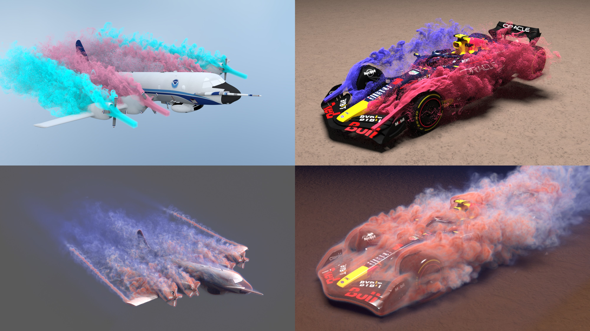

Cirrus: Adaptive Hybrid Particle-Grid Flow Maps on GPU
Mengdi Wang1 , Fan Feng2, Junlin Li1, Bo Zhu1
1Georgia Institute of Technology
2Dartmouth College
ACM Transactions on Graphics (Proceedings of SIGGRAPH 2025)

Simulating large-scale fluids with incredible detail just got easier. Meet Cirrus, our high-performance GPU simulator for high-resolution fluid simulations. By combining particles and adaptive grids in a new hybrid flow-map scheme, Cirrus uniquely preserves fine vortex details while achieving substantial efficiency gains—up to 100×—compared to uniform-grid methods. Our framework supports simulations up to 512×512×2048 resolution on a single RTX 4090 GPU, delivering both speed and quality in a single system. See the results below or try with our open-source code!
Abstract
We propose the adaptive hybrid particle-grid flow map method, a novel flow-map approach that leverages Lagrangian particles to simultaneously transport impulse and guide grid adaptation, introducing a fully adaptive flow map-based fluid simulation framework. The core idea of our method is to maintain flow-map trajectories separately on grid nodes and particles: the grid-based representation tracks long-range flow maps at a coarse spatial resolution, while the particle-based representation tracks both long and short-range flow maps, enhanced by their gradients, at a fine resolution. This hybrid Eulerian-Lagrangian flow-map representation naturally enables adaptivity for both advection and projection steps. We implement this method in Cirrus, a GPU-based fluid simulation framework designed for octree-like adaptive grids enhanced with particle trackers. The efficacy of our system is demonstrated through numerical tests and various simulation examples, achieving up to 512x512x2048 effective resolution on an RTX 4090 GPU. We achieve a 1.5 to 2x speedup with our GPU optimization over the Particle Flow Map method on the same hardware, while the adaptive grid implementation offers efficiency gains of one to two orders of magnitude by reducing computational resource requirements. The source code has been made publicly available at: https://wang-mengdi.github.io/proj/25-cirrus/.
Method
We construct an octree-based adaptive grid on the GPU using 8×8×8 tiles as the fundamental building blocks. A particle system serves both as a medium for convective flow mapping and as an oracle to guide grid refinement, enabling fine resolution in regions with critical flow features.
Results
Racing Car
The computational domain is $1\times 1\times 2$ with effective resolution $512\times 512\times 1024$. The inflow and outflow are $\mathbf u=(0,0,1)$ and the length of the car is $0.9$ in the z-axis.
Aircraft
A WP-3D aircraft model in flow $(0,0,1)$ with $4$ rotating propellers at a 15-degree angle of attack. The effective resolution is $512\times 512\times 1024$ in a computational domain $1\times 1\times 2$, and the length of the aircraft is $0.9$. It demonstrates that our algorithm can efficiently simulate moving small objects and effectively reproduce physical phenomena such as wingtip vortices.
Flamingo Flock
A flying flamingo flock created with a particle system as the effective resolution spans $512\times 512\times 2048$.
Bat
A bat with complex mesh flapping its wings.
Video